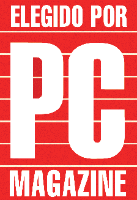

Tweet
Tweet
We now understand that character recognition is a very complex technology. How good is the text recognition state-of-the-art OCR software offers? What kind of accuracy can we expect when we read our texts?
On “good quality” documents, you’ll get a recognition rate of 99.99%, on documents of worse quality, the recognition rate can drop.
You may occasionally come across an OCR benchmark on the Internet or in a computer magazine. Such benchmarks usually measure three factors: (1) the speed, (2) the accuracy of the OCR software and (3) the capability to retain the document’s format.

The formatting power of an OCR package is not really something you can mathematically measure. To recreate the source document, the OCR software will employ columns or frames, insert the graphics in the right places, apply alignment, font types, sizes and typestyles to the recognized text. We’re dealing with many different aspects of word processing here, so how could you sum up in a simple figure the capability of an OCR software package to be an invisible and automatic word processor? It takes a specific description of how you appreciate the job your OCR software does when reformatting a document with a complex layout.
Still, state-of-the-art OCR software should be capable of retaining the layout of the scanned documents with a high faithfulness. And a major aspect of this is indoubtedly the possibility to recreate tables.
The speed can of course be measured in a straightforward way: how many seconds does it take to convert an image into a text file? For the home user, the speed matters less, but when a company processes large volumes of documents, shaving extra seconds off the recognition of a document influences the productivity directly!
A small recap: document recognition is easily 40 times faster than manual retyping. A (very) fast secretary types some 200 characters per minute, the fastest OCR software recognizes some 1,600 characters per second on a slow PC, say, a 1 GHz Pentium machine. (Add sufficient time for the scanning process and the handling of the software.)
That’s the kind of speed you get in a “SOHO” environment. When you’re performing batch OCR on large volumes of documents, your “throughput” depends on the speed of the scanner, the number of scanners that run simultaneously, how fast the images travel on your network etc. It takes detailed information about the various factors and some actual on-site experience to forecast accurately what kind of “mileage” you’ll get out of a day’s work.
With the fastest OCR engine on the market, recognizing a document (scanning not included) takes one to seconds per US Letter or A4 page, and unless you own a very fast scanner, the recognition is faster than the scanning!
The recognition may be deferred: you can have scanning operators doing their job during the day and an OCR server processing the scanned images by night.
The OCR accuracy can be measured as well. Count how many reading errors the OCR package makes on an image collection.
Some OCR benchmarks (of the scientific kind, not the ones you find in computer magazines) discriminate various kinds of errors.
| OCR Benchmarks: Error Types | |||
| Expected result | Result | Type | Explanation |
| apple | a~~le | rejections |
characters didn’t get recognized
rejected characters are usually represented by the tilde character (~) |
| applc | substitutions | characters got badly recognized | |
| appLe | case errors | erroneous uppercase-lowercase decisions | |
| eat an | eatan | space errors | missing spaces (“joins”) or superfluous spaces (“splits”) |
| apple | app le | ||
Mind you, don’t compare the reject and substitution ratios directly: some OCR packages tend to generate more rejects and less substitutions than their competitors, other OCR packages take the opposite standpoint. This depends on the “certainty thresholds” internally used by the OCR engines: while one engine tries to offer relative certainty for its results, another package tries harder to generate output, even if this may result in more questionable results.
Some benchmarks assign different weights to certain types of errors: rejected characters and substitutions are then seen as “real” recognition errors while punctuation errors are given less weight. For one, spell checkers won’t detect these errors!
Furthermore, there are two fundamentally different methods of measuring the OCR accuracy: character-based statistics and word-based statistics. Character-based counts imply that you compute how many characters in the recognized text are wrong, the word-based method calculates how many words in a text are wrong.
These methods can lead to significantly different results: in character-based counts, the systematic substitution of a symbol gets punished very severely, while multiple errors inside a word — think of words with difficult ligatures and glued characters — get away lightly. The inspiration for the word-based method again comes from spell checking: if the OCR user wants to proofread his text after the recognition phase, he can make good use of his spell checker to find all unknown words.
Scientifically speaking, word-based statistics have a major flaw: you just learn that a certain word wasn’t recognized well. But why was that? Does the OCR kernel have problems with specific characters, say the German“ß” symbol? If a specific symbol was systematically substituted or rejected, wouldn’t you like to know about it? And if an OCR engine has problems with the ligatures “fl” and “fi”, then that’s what you need to know, not that the words “floor” and “figure” were badly recognized.
Earlier, we discussed the Asian languages Japanese, Simplified and Traditional Chinese and Korean. We explained how difficult these languages are with thousand of different symbols. Do the recognition rates we announce for Western languages also apply to the Asian languages? Does the specialized OCR software for these languages actually recognize all of these pictograms?
Not really, some symbols are so complex — they can contain up to 48 strokes — that it’s not feasible to recognize them. Luckily, such ideograms are so archaic and obscure that they’re hardly ever used, and the number of people that know and recognize them can be very limited…
Chinese has tens of thousands of characters. A large dictionary contains 40,000 to 50,000 characters. The telegraphic code book comprises nearly 10,000 symbols, and knowledge of about 5,000 characters is sufficient to read modern standard written Chinese competently, which takes at least 5 years of full-time study to acquire. The Big 5 font of Traditional Chinese has 13,053 ideograms and the GB(K) font font of Simplified Chinese has 6,763 ideograms. Only some 3,000 symbols are used on daily basis.
In practice, a state-of-the-art OCR engine for Chinese will “only” recognize about 4,000 ideograms. Still, when a benchmark is created using a large body of text, you come to the conclusion that 99.80% of all used symbols is covered! (The statistical data for Japanese and Korean are entirely in the same range.)
In other words, when you get down to the normal language that actually gets printed in books, magazines, newspapers, letters and so forth, you get a recognition rate above 99.5%, which is directly comparable to what you get on Latin-based languages.
Training the system further — The accuracy of OCR software — How good are your scanning skills? — With a little help from the friends — Recognizing snapshots — Recognizing prescanned images and faxes — Repurposing PDF files
Home page — Intro — Scanners — Images — History — OCR — Languages — Accuracy — Output — BCR — Pen scanners — Sitemap — Search — Contact – Feedback